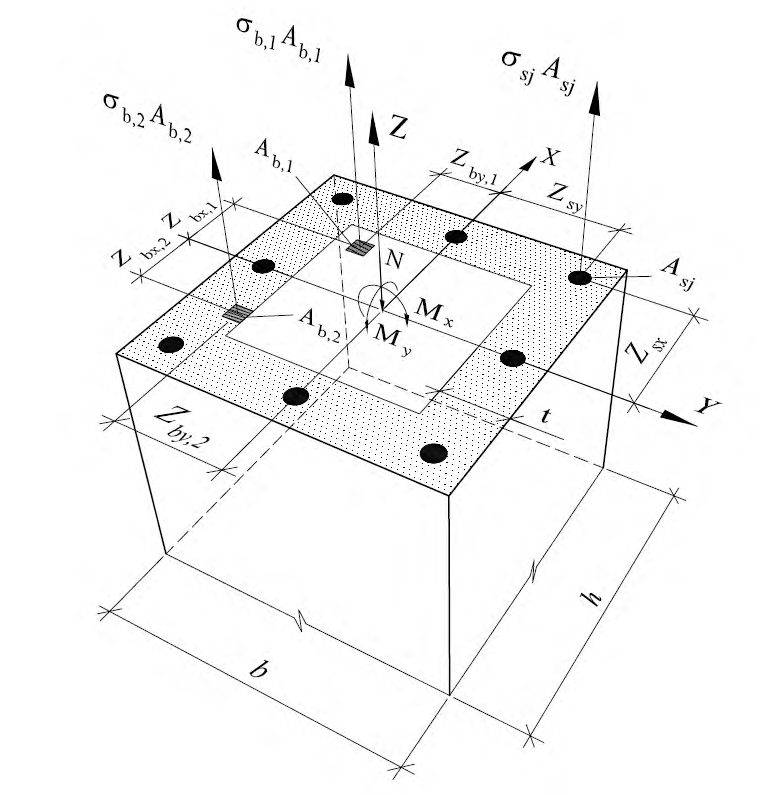

СП 311.1325800.2017 «Бетонные и железобетонные конструкции из высокопрочных бето»
О документе: разработчики, утверждение, регистрация, ключевые слова
- 1 ИСПОЛНИТЕЛЬ - АО «НИЦ «Строительство» - НИИЖБ им. А.А. Гвоздева
- 2 ВНЕСЕН Техническим комитетом по стандартизации ТК 465 «Строительство»
- 3 ПОДГОТОВЛЕН к утверждению Департаментом градостроительной деятельности и архитектуры Министерства строительства и жилищно-коммунального хозяйства Российской Федерации (Минстрой России)
- 4 УТВЕРЖДЕН И ВВЕДЕН В ДЕЙСТВИЕ приказом Министерства строительства и жилищно-коммунального хозяйства Российской Федерации от 9 ноября 2017 г. № 1518/пр и введен в действие с 10 мая 2018 г.
- 5 ЗАРЕГИСТРИРОВАН Федеральным агентством по техническому регулированию и метрологии (Росстандарт)
В случае пересмотра (замены) или отмены настоящего свода правил соответствующее уведомление будет опубликовано в установленном порядке. Соответствующая информация, уведомление и тексты размещаются также в информационной системе общего пользования - на официальном сайте разработчика (Минстрой России) в сети Интернет
© Минстрой России, 2017
Настоящий нормативный документ не может быть полностью или частично воспроизведен, тиражирован и распространен в качестве официального издания на территории Российской Федерации без разрешения Минстроя России
Дата введения 2018-05-10
Введение
6 ВВЕДЕН ВПЕРВЫЕ
Настоящий свод правил разработан с учетом обязательных требований, установленных в федеральных законах от 27 декабря 2002 г. № 184ФЗ «О техническом регулировании», от 30 декабря 2009 г. № 384-ФЗ «Технический регламент о безопасности зданий и сооружений» и содержит требования к расчету и проектированию бетонных и железобетонных конструкций промышленных и гражданских зданий и сооружений с применением высокопрочного бетона класса по прочности на сжатие В60 … В150.
Свод правил разработан авторским коллективом АО «НИЦ «Строительство» - НИИЖБ им. А.А. Гвоздева (руководитель работы - д-р техн. наук Т.А Мухамедиев , д-ра техн. наук С.Б. Крылов , С.С. Каприелов, С.А. Мадатян, А.В. Шейнфельд, кандидаты техн. наук В.В. Дьячков, С.А. Зенин, Д.В. Кузеванов , Б.С. Соколов, Р.Ш. Шарипов ; инженер С.О. Слышенков).
1Область применения
Настоящий свод правил распространяется на проектирование сборных и монолитных бетонных и железобетонных конструкций из высокопрочных бетонов классов по прочности при сжатии В60 и выше для зданий и сооружений различного назначения, эксплуатируемых в климатических условиях России (при систематическом воздействии температур не выше 50 °С и не ниже минус 70 °С), в среде с неагрессивной степенью воздействия.
Свод правил устанавливает требования к проектированию бетонных и железобетонных конструкций, изготовляемых из высокопрочных тяжелых бетонов классов В110-В150, мелкозернистых бетонов классов В60-В100 и напрягающих бетонов классов В80-В100. Проектирование бетонных и железобетонных конструкций и изделий, изготовляемых из высокопрочных тяжелых бетонов классов В60-В100 и напрягающих бетонов классов В60, В70 следует выполнять по СП 63.13330.
High strength concrete and reinforced high strength concrete structures. Design guidline
СП 311.1325800.2017
Требования настоящего свода правил не распространяются на проектирование сталежелезобетонных конструкций, фибробетонных конструкций, сборномонолитных конструкций, бетонных и железобетонных конструкций гидротехнических сооружений, мостов, покрытий автомобильных дорог и аэродромов и других специальных сооружений, конструкций, изготовляемые из бетонов средней плотностью менее 2000 и свыше 2500 кг/м³ , а также конструкций из бетонополимеров и полимербетонов.
2Нормативные ссылки
В настоящем своде правил использованы ссылки на следующие нормативные документы:
СП 63.13330.2012 «СНиП 52-01-2003 Бетонные и железобетонные конструкции. Основные положения» (с изменениями №1, №2)
ГОСТ 31914-2012 Бетоны высокопрочные тяжелые и мелкозернистые для монолитных конструкций. Правила контроля и оценка качества
Примечание - При пользовании настоящим сводом правил целесообразно проверить действие ссылочных документов в информационной системе общего пользования - на официальном сайте национального органа Российской Федерации по стандартизации в сети Интернет или по ежегодно издаваемому информационному указателю «Национальные стандарты», который опубликован на 01 января текущего года, и по соответствующим ежемесячно издаваемым информационным указателям, опубликованным в текущем году. Если ссылочный документ заменен (изменен), то при пользовании настоящим сводом правил следует руководствоваться замененным (измененным) документом. Если ссылочный документ отменен без замены, то положение, в котором дана ссылка на него, применяется в части, не затрагивающей эту ссылку. Сведения о действии сводов правил целесообразно проверить в Федеральном информационном фонде стандартов.
3Термины и определения
В настоящем своде правил приняты термины и определения в
- 3.1бетонные конструкции
- Конструкции, выполненные из высокопрочного бетона с арматурой, устанавливаемой по конструктивным соображениям и не учитываемой в расчете.
- 3.2высокопрочный бетон
- Тяжелый, мелкозернистый или напрягающий бетон класса В60 и выше, приготовленный с применением вяжущего на основе портландцементного клинкера.
4Общие требования к бетонным и железобетонным конструкциям
5Требования к расчету бетонных и железобетонных конструкций
Приведенная плотность конструкций
СП 311.1325800.2017 Таблица 5.1 -
| Коэффици- ент арми- рования конструк- ции μ,% | Приведенная плотность конструкций, кг/м³ , при классе высокопрочного бетона по прочности на сжатие | Приведенная плотность конструкций, кг/м³ , при классе высокопрочного бетона по прочности на сжатие | Приведенная плотность конструкций, кг/м³ , при классе высокопрочного бетона по прочности на сжатие |
|---|---|---|---|
| Коэффици- ент арми- рования конструк- ции μ,% | В60 | В100 | В150 |
| 0 | 2400 | 2450 | 2500 |
| 1 | 2450 | 2500 | 2550 |
| 2 | 2500 | 2550 | 2600 |
| 4 | 2600 | 2650 | 2700 |
Примечание - Для промежуточных значений классов бетона и коэффициентов армирования значения следует определять по линейной интерполяции.
При содержании арматуры свыше 4% плотность определяется как сумма масс бетона и арматуры на единицу объема железобетонной конструкции.
6Материалы для бетонных и железобетонных конструкций
6.1Бетон
- тяжелый средней плотности от 2350 до 2500 кг/м³ включительно;
- мелкозернистый средней плотности от 2000 до 2350 кг/м³ включительно;
- напрягающий.
Таблица 6.1 Классы высокопрочного бетона по прочности на сжатие
| Бетон | Классы по прочности на сжатие |
|---|---|
| Тяжелый бетон | В110; В120; В130; В140; В150 |
| Мелкозернистый бетон | В70; В80; В90; В100 |
| Напрягающий бетон | В80; В90; В100; В110; В120; В130; В140; В150 |
Таблица 6.2 Классы высокопрочного бетона по прочности на осевое растяжение
| Бетон | Класс прочности на осевое растяжение |
|---|---|
| Тяжелый, напрягающий и мелкозернистый бетоны | B t 2,0; B t 2,4; B t 2,8; B t 3,2; B t 3,6; B t 4,0; B t 4,4; B t 4,8 |
Таблица 6.3 Марки высокопрочного бетона по морозостойкости
| Бетон | Марки по морозостойкости |
|---|---|
| Тяжелый, напрягающий и мел- козернистый бетоны | F 1 150; F 1 200; F 1 300; F 1 400; F 1 500; F 1 600; F 1 700; F 1 800; F 1 1000 |
Таблица 6.4 Марки высокопрочного бетона по водонепроницаемо-
СП 311.1325800.2017 сти
| Бетон | Марки по водонепроницаемости |
|---|---|
| Тяжелый, напрягающий и мел- козернистый бетоны | W8; W10; W12; W14; W16; W18; W20 |
Таблица 6.5 Марки высокопрочного бетона по самонапряжению
| Бетон | Марки по самонапряжению |
|---|---|
| Напрягающий бетон | S p 0,6; S p 0,8; S p 1; S p 1,2; S p 1,5; S p 2; S p 3; S p 4 |
; .
Нормативные значения сопротивления высокопрочного бетона осевому сжатию (призменная прочность) и осевому растяжению (при назначении класса бетона на прочность на сжатие) принимают в зависимости от класса бетона по прочности на сжатие В согласно таблице 6.6.
Таблица 6.6
| Вид | Бетон | Нормативные сопротивления бетона R b,n и R bt,n МПа, и рас- четные сопротивления бетона для предельных состояний второй группы R ser и R bt,ser МПа при классе высокопрочного бетона по прочности на сжатие | Нормативные сопротивления бетона R b,n и R bt,n МПа, и рас- четные сопротивления бетона для предельных состояний второй группы R ser и R bt,ser МПа при классе высокопрочного бетона по прочности на сжатие | Нормативные сопротивления бетона R b,n и R bt,n МПа, и рас- четные сопротивления бетона для предельных состояний второй группы R ser и R bt,ser МПа при классе высокопрочного бетона по прочности на сжатие | Нормативные сопротивления бетона R b,n и R bt,n МПа, и рас- четные сопротивления бетона для предельных состояний второй группы R ser и R bt,ser МПа при классе высокопрочного бетона по прочности на сжатие | Нормативные сопротивления бетона R b,n и R bt,n МПа, и рас- четные сопротивления бетона для предельных состояний второй группы R ser и R bt,ser МПа при классе высокопрочного бетона по прочности на сжатие | Нормативные сопротивления бетона R b,n и R bt,n МПа, и рас- четные сопротивления бетона для предельных состояний второй группы R ser и R bt,ser МПа при классе высокопрочного бетона по прочности на сжатие | Нормативные сопротивления бетона R b,n и R bt,n МПа, и рас- четные сопротивления бетона для предельных состояний второй группы R ser и R bt,ser МПа при классе высокопрочного бетона по прочности на сжатие | Нормативные сопротивления бетона R b,n и R bt,n МПа, и рас- четные сопротивления бетона для предельных состояний второй группы R ser и R bt,ser МПа при классе высокопрочного бетона по прочности на сжатие | Нормативные сопротивления бетона R b,n и R bt,n МПа, и рас- четные сопротивления бетона для предельных состояний второй группы R ser и R bt,ser МПа при классе высокопрочного бетона по прочности на сжатие |
|---|---|---|---|---|---|---|---|---|---|---|
| В70 | В80 | В90 | В100 | В110 | В120 | В130 | В140 | В150 | ||
| Сжатие осе- вое (призменная | Тяжелый и напрягаю- щий | - | 57 | 64 | 71 | 78 | 85 | 92 | 99 | 106 |
| прочность) R b,n и R b,ser | Мелкозерни- стый | 50 | 57 | 64 | 71 | - | - | - | - | - |
| Растяжение осевое R bt,n и R bt,ser | Тяжелый и напрягаю- щий | - | 3,30 | 3,60 | 3,8 | 4,00 | 4,20 | 4,40 | 4,60 | 4,80 |
| Мелкозерни- стый | 3,0 | 3,30 | 3,60 | 3,8 | - | - | - | - | - |
Примечание - Для напрягающего бетона значения Rbt,n и Rbt,ser следует принимать с умножением на коэффициент 1,2.
где b и bt - коэффициенты надежности по бетону при его сжатии и растяжении;
b,br - коэффициент, учитывающий увеличение хрупкости высокопрочных бетонов.
Значение коэффициентов b и bt принимают по таблице 6.7.
Значение коэффициента b,br определяют по формуле
где В - класс высокопрочного бетона по прочности на сжатие.
Таблица 6.7
| Коэффициенты надежности по бетону при сжатии и растяжении b и bt для расчета конструкций по пре- дельным состояниям | Коэффициенты надежности по бетону при сжатии и растяжении b и bt для расчета конструкций по пре- дельным состояниям | Коэффициенты надежности по бетону при сжатии и растяжении b и bt для расчета конструкций по пре- дельным состояниям | Коэффициенты надежности по бетону при сжатии и растяжении b и bt для расчета конструкций по пре- дельным состояниям | |
|---|---|---|---|---|
| Вид бетона | Первой группы | Первой группы | Первой группы | Второй группы b и bt |
| b | bt при назначении класса бе- тона по прочности | bt при назначении класса бе- тона по прочности | ||
| на сжатие | на растяжение | |||
| Тяжелый, мелкозер- нистый и напрягаю- щий бетон | 1,3 | 1,5 | 1,3 | 1,0 |
Расчетные значения сопротивления высокопрочного бетона Rb , Rbt , Rb,ser , Rbt,ser в зависимости от класса бетона по прочности на сжатие и осевое растяжение приведены (с округлением): для предельных состояний первой группы - в таблице 6.8, второй группы - в таблице 6.6.
Таблица 6.8
| Вид | Бетон | Расчетные сопротивления бетона R b и R bt МПа, для предель- ных состояний первой группы при классе высокопрочного бетона по прочности на сжатие | Расчетные сопротивления бетона R b и R bt МПа, для предель- ных состояний первой группы при классе высокопрочного бетона по прочности на сжатие | Расчетные сопротивления бетона R b и R bt МПа, для предель- ных состояний первой группы при классе высокопрочного бетона по прочности на сжатие | Расчетные сопротивления бетона R b и R bt МПа, для предель- ных состояний первой группы при классе высокопрочного бетона по прочности на сжатие | Расчетные сопротивления бетона R b и R bt МПа, для предель- ных состояний первой группы при классе высокопрочного бетона по прочности на сжатие | Расчетные сопротивления бетона R b и R bt МПа, для предель- ных состояний первой группы при классе высокопрочного бетона по прочности на сжатие | Расчетные сопротивления бетона R b и R bt МПа, для предель- ных состояний первой группы при классе высокопрочного бетона по прочности на сжатие | Расчетные сопротивления бетона R b и R bt МПа, для предель- ных состояний первой группы при классе высокопрочного бетона по прочности на сжатие | Расчетные сопротивления бетона R b и R bt МПа, для предель- ных состояний первой группы при классе высокопрочного бетона по прочности на сжатие |
|---|---|---|---|---|---|---|---|---|---|---|
| В70 | В80 | В90 | В100 | В110 | В120 | В130 | В140 | В150 | ||
| Сжатие осевое (призменная | Тяжелый и напрягаю- щий | 41 | 44 | 47,5 | 50 | 52 | 54 | 55,5 | 57 | |
| прочность) R b | Мелкозерни- стый | 37 | 41 | 44 | 47,5 | - | - | - | - | - |
| Растяжение осевое R bt | Тяжелый и напрягаю- щий | 2,1 | 2,1 | 2,2 | 2,2 | 2,25 | 2,25 | 2,25 | 2,25 | |
| Растяжение осевое R bt | Мелкозерни- стый | 1,9 | 2,1 | 2,1 | 2,2 | - | - | - | - | - |
Примечание - Для напрягающего бетона значения Rbt следует принимать с умножением на коэффициент 1,2.
Таблица 6.9
| Факторы, обусловливающие введение коэффициента | Коэффициент условий работы бетона | Коэффициент условий работы бетона |
|---|---|---|
| условий работы бетона | условное обозна- чение | числовое значение |
| 1 Длительность действия нагрузки: - при непродолжительном (кратковременном) действии нагрузки - при продолжительном действии нагрузки | b 1 | 1,00 |
| 0,90 | ||
| 2 Бетонирование в вертикальном положении (высота слоя бетонирования свыше 1,5 м) | b 2 | 0,85 |
- при непродолжительном действии нагрузки: ε b 0 = 0,002 при осевом сжатии - для бетонов классов В100 и ниже и по линейному закону от 0,002 при В100 до 0,0025 при В150 - для бетонов классов В110-В150; ε bt 0 = 0,0001 - при осевом растяжении для бетонов класса В100 и ниже и по линейному закону от 0,0001 при В100 до 0,00012 при В150 - для бетонов классов В110-В150;
- при продолжительном действии нагрузки: ε b 0 принимают для бетонов класса В100 и ниже - по таблице 6.10 СП 63.13330.2012, а для бетонов классов В110-В150 - по линейному закону от их значения для В100 до значения ε b 2 для В150, определяемого по 6.1.16; ε bt 0 принимают для бетонов класса В100 и ниже - по таблице 6.10 СП 63.13330.2012, а для бетонов классов В110-В150 - по линейному закону от их значения для В100 до значения ε bt 2 для В150, определяемого по 6.1.16.
При продолжительном действии нагрузки значения модуля деформаций бетона определяют по формуле
где , b cr - коэффициент ползучести бетона, принимаемый согласно 6.1.12.
Таблица 6.10
| Бетон | Значения начального модуля упругости бетона при сжатии и рас- тяжении E b , МПа·10 -3 ,при классе бетона по прочности на сжатие | Значения начального модуля упругости бетона при сжатии и рас- тяжении E b , МПа·10 -3 ,при классе бетона по прочности на сжатие | Значения начального модуля упругости бетона при сжатии и рас- тяжении E b , МПа·10 -3 ,при классе бетона по прочности на сжатие | Значения начального модуля упругости бетона при сжатии и рас- тяжении E b , МПа·10 -3 ,при классе бетона по прочности на сжатие | Значения начального модуля упругости бетона при сжатии и рас- тяжении E b , МПа·10 -3 ,при классе бетона по прочности на сжатие | Значения начального модуля упругости бетона при сжатии и рас- тяжении E b , МПа·10 -3 ,при классе бетона по прочности на сжатие | Значения начального модуля упругости бетона при сжатии и рас- тяжении E b , МПа·10 -3 ,при классе бетона по прочности на сжатие | Значения начального модуля упругости бетона при сжатии и рас- тяжении E b , МПа·10 -3 ,при классе бетона по прочности на сжатие | Значения начального модуля упругости бетона при сжатии и рас- тяжении E b , МПа·10 -3 ,при классе бетона по прочности на сжатие |
|---|---|---|---|---|---|---|---|---|---|
| В70 | В80 | В90 | В100 | В110 | В120 | В130 | В140 | В150 | |
| Тяжелый | - | 42 | 42,5 | 43 | 43,5 | 44,0 | 44,5 | 45,0 | 45,5 |
| Мелкозерни- стый | 33 | 34,5 | 36,0 | 37,5 | - | - | - | - | - |
Таблица 6.11
| Относитель- | Значения коэффици- |
|---|---|
| ная влажность | ента ползучести бетона |
| воздуха окру- жающей среды,% | b,cr при классе тяже- лого бетона на сжатие | b,cr при классе тяже- лого бетона на сжатие | b,cr при классе тяже- лого бетона на сжатие |
|---|---|---|---|
| воздуха окру- жающей среды,% | В60 - В100 | В110 - В120 | В130 - В150 |
| Выше 75 | 1,0 | 1,0 | 1,0 |
| 40 - 75 | 1,4 | 1,3 | 1,2 |
| Ниже 40 | 2,0 | 1,6 | 1,4 |
Для двухлинейной диаграммы осевого сжатия значения относительных деформаций b 1 и b 2 для высокопрочных бетонов классов В60-В100 при продолжительном и непродолжительном действии нагрузки принимают по СП 63.13330, а для высокопрочных бетонов классов В110-В150 принимают:
- по линейному закону от 0,0015 при В100 до 0,0023 при В150 - относительные деформации b 1 при непродолжительном действии нагрузки, а при продолжительном действии нагрузки - по формуле
где b 1 ,red принимают по таблице 6.10 СП 63.13330.2012.
- по линейному закону от 0,0028 при В100 до 0,0025 при В150- относительные деформации b 2 при непродолжительном действии нагрузки, а при продолжительном действии нагрузки - по формуле
где b 2,В100 принимают по таблице 6.10 СП 63.13330.2012 для бетона класса В100 с учетом указанного в этой таблице примечания 2.
В формулах (6.5), (6.6) В - класс высокопрочного бетона по прочности на сжатие.
Для двухлинейной диаграммы осевого растяжения значения относительных деформаций bt 1 и bt 2 для высокопрочных бетонов классов В60В100 принимают по СП 63.13330, а для высокопрочных бетонов классов В110-В150 принимают:
- по линейному закону от 0,0001 при В100 до 0,00011 при В150 - относительные деформации bt 1 при непродолжительном действии нагрузки, а при продолжительном действии нагрузки - по формуле (6.5), в которую вместо параметра b 1 ,red следует подставлять bt 1 ,red , значение которого принимают по таблице 6.10 СП 63.13330.2012;
- по линейному закону от 0,00015 при В100 до 0,00012 при В150 - относительные деформации bt 2 при непродолжительном действии нагрузки, а при продолжительном действии нагрузки -по таблице 6.10 СП 63.13330.2012 с корректировкой приведенных в ней значений путем умножения на соотношение (775-В)/675.
6.2Арматура
Допускается применять: термомеханически упрочненную арматуру периодического профиля класса А600С из стали марки 20Г2СФБА [1], в том числе в сварных сетках и каркасах - для железобетонных конструкций из высокопрочных бетонов без предварительного напряжения арматуры в качестве рабочей арматуры, устанавливаемой по расчету; термомеханически упрочненную арматуру периодического профиля класса А600С из стали марки 20Г2СФБА [1] - для предварительно напряженных железобетонных конструкций из высокопрочных бетонов.
7Расчет железобетонных конструкций без предварительного напряжения арматуры
7.1Расчет железобетонных конструкций по предельным состояниям первой группы
Расчет по прочности нормальных сечений железобетонных элементов прямоугольного, двутаврового и таврового сечений с арматурой, расположенной у перпендикулярных плоскости изгиба граней элемента, при действии усилий в плоскости симметрии нормальных сечений методом предельных усилий следует производить по СП 63.13330 и 7.1.3.
СП 311.1325800.2017 граничной относительной высоты сжатой зоны бетона R следует определять по формуле
где ω- коэффициент полноты эпюры напряжений в бетоне сжатой зоны сечения, принимаемый равным 0,7 - для высокопрочных бетонов класса В100 и ниже, а для бетонов класса В110 и выше - вычисляемый по формуле
здесь В - числовое значение класса бетона;
b 2 - относительная деформация сжатого бетона при напряжениях, равных Rb , принимаемая в соответствии с 6.1.16;
s , el - относительная деформация растянутой арматуры при напряжениях, равных Rs
Rs - расчетное сопротивление арматуры растяжению;
Еs - модуль упругости арматуры.
7.2Расчет железобетонных конструкций по предельным состояниям второй группы
где k - коэффициент, определяемый по линейному закону от значения 0,85 для В100 до значения 1,0 для В150; при продолжительном действии нагрузки -по пункту 8.2.26 СП 63.13330.2012 принимая при этом значение коэффициента ползучести
СП 311.1325800.2017 бетона φ b , cr в соответствии с 6.1.13.
где Wred - упругий момент сопротивления приведенного сечения по растянутой зоне сечения, определяемый в соответствии с пунктом 8.2.12 СП 63.13330.2012; k - коэффициент, принимаемый для высокопрочного бетона класса В100 и ниже равным 1,3, а для бетонов классов В110-В150 - определяемый по линейному закону от значения 1,3 для В100 до значения 1,0 для В150.
8Расчет предварительно напряженных железобетонных конструкций
Расчет предварительно напряженных конструкций следует проводить в соответствии с СП 63.13330 и 8.1 - 8.3.
8.1Предварительные напряжения арматуры
Предварительные напряжения арматуры следует принимать в соответствии с пунктами 9.1.1-9.1.12 СП 63.13330.2012 и приведенным ниже:
- потери от усадки высокопрочного бетона при натяжении арматуры на упоры следует определять по формуле (9.8) СП 63.13330.2012, в которой деформации усадки бетона , b sh для бетона классов В110-В150 следует принимать равными 0,0003; для бетона, подвергнутого тепловой обработке при атмосферном давлении, потери от усадки бетона 5 sp следует вычислять по формуле (9.8) СП 63.13330.2012 с умножением полученного результата на коэффициент, равный 0,85.
- потери от усадки бетона 5 sp при натяжении арматуры на бетон следует определять по формуле (9.8) СП 63.13330.2012 с умножением полученного результата независимо от условий твердения бетона на коэффициент, равный 0,75.
- потери от ползучести следует определять по формуле (9.9) СП 63.13330.2012, в которой коэффициент ползучести бетона , b cr назначают согласно 6.1.
8.2Расчет предварительно напряженных железобетонных конструкций по предельным состояниям первой группы
где sp σ - предварительное напряжение в арматуре с учетом всех потерь, принимаемое при значении коэффициента p γ =0,9.
8.3Расчет предварительно напряженных железобетонных конструкций по предельным состояниям второй группы
9Поверочный расчет монолитных железобетонных конструкций с учетом неоднородной прочности бетона
Dij ( i,j = 1,2,3) в приведенных в СП 63.13330.2012 уравнениях (8.39) - (8.41) следует определять по следующим формулам (рисунок 9.1):
где
Ab 1 i , Zb 1 xi , Zb 1 y i - площадь и координаты центра тяжести i -го участка глубинных слоев бетона;
Ab 2 j , Zb 2 xj , Zb 2 yj - площадь и координаты центра тяжести j -го участка поверхностного слоя бетона;
Asj , Zsxj , Zsyjj - площадь и координаты центра тяжести j -го стержня арматуры;
Еb 1 - начальный модуль упругости глубинных слоев бетона;
Еb 2 - начальный модуль упругости поверхностного слоя бетона;
Еsj - модуль упругости jго стержня арматуры;
b 1 i - коэффициент упругости бетона i -го участка глубинных слоя бетона в сечении элемента;
b 2 j - коэффициент упругости бетона j -го участка поверхностного слоев бетона в сечении элемента;
sj - коэффициент упругости j -го стержня арматуры.
Рисунок 9.1 - Расчетная схема нормального сечения железобетонного элемента с неоднородной прочностью бетона

Коэффициенты b 1 i и b 2 j принимают по соответствующим диаграммам состояния бетона поверхностных и глубинных слоев сечения конструкции.
Глубину поверхностного слоя бетона с пониженной прочностью на сжатие по всему периметру сечения следует принимать равной 50 мм.
10Конструктивные требования
- 300 мм - в направлении, перпендикулярном к плоскости изгиба;
- 400 мм - в направлении плоскости изгиба.
Диаметр поперечной арматуры в вязаных каркасах изгибаемых элементов принимают не менее 8 мм.
В балках и ребрах высотой 150 мм и более, а также в часторебристых плитах высотой 300 мм и более, на участках элемента, где поперечная сила по расчету воспринимается только бетоном, следует предусматривать установку поперечной арматуры с шагом не более 0,75 h 0 и не более 400 мм.
Если площадь сечения сжатой продольной арматуры, устанавливаемой у одной из граней элемента, более 1,5 %, поперечную арматуру следует устанавливать с шагом не более 10 d и не более 250 мм.
11Требования к изготовлению, возведению и эксплуатации железобетонных конструкций
Библиография
- [1] ТУ 14-1-5596-2010 Прокат термомеханически упрочненный класса А600С для армирования железобетонных конструкций. Технические условия
- [2] ТУ 14-1-5543-2006 Прокат термомеханически упрочненный класса Ас500С повышенной хладостойкости для армирования железобетонных конструкций